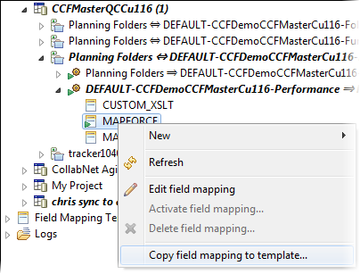
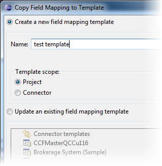

You can establish the scope of your mapping rules at two levels -- by setting up field mapping templates at the connector level or project level.
-
In the CollabNet Sites view, right-click a field mapping
and select Copy field mapping to template.
Here's an example.

-
In the Copy Field Mapping to Template dialog, you can either create a new template or update an existing one.

- To create a new template, provide a name and scope for the template.
- Site-wide templates are available in all repository mappings. Only TeamForge site administrators can create or modify them. These are useful, for example, when you have company-wide mapping rules, and you want any change in those rules to be reflected in all related field mappings.
- Project-wide templates are specific to a TeamForge project. TeamForege project administrators will find them useful to set up several similar mappings with minor changes.
- To update an existing template, select the one you want to change.
-
Click OK.